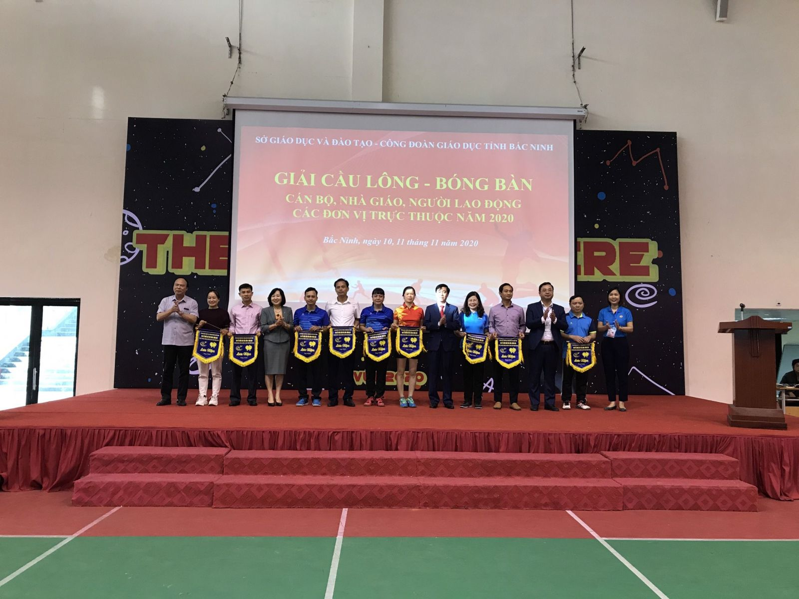
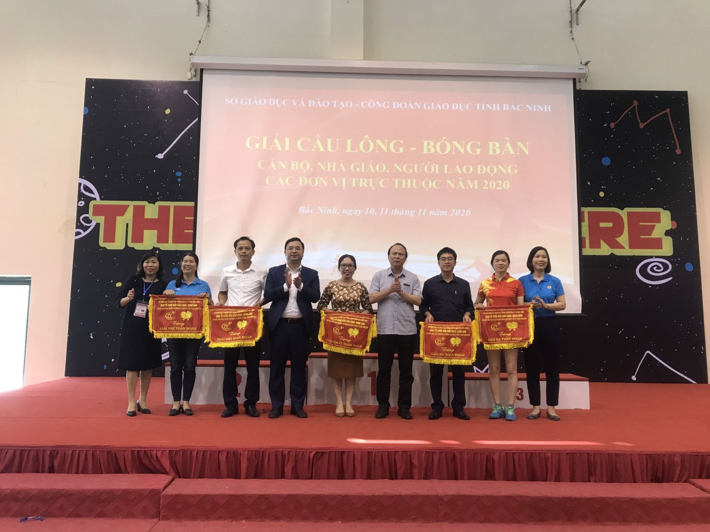
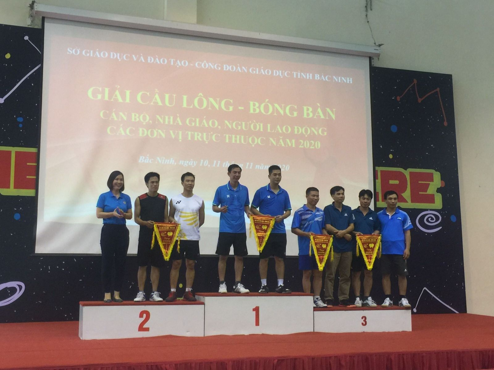
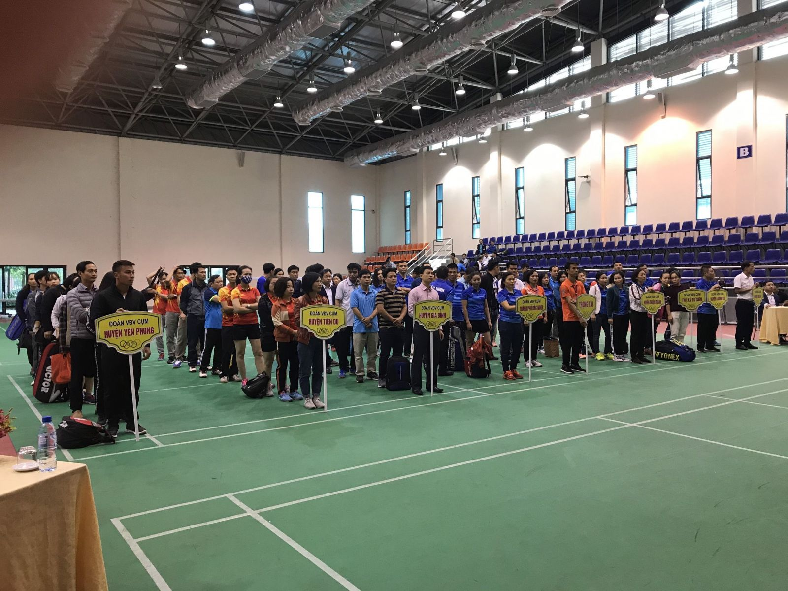
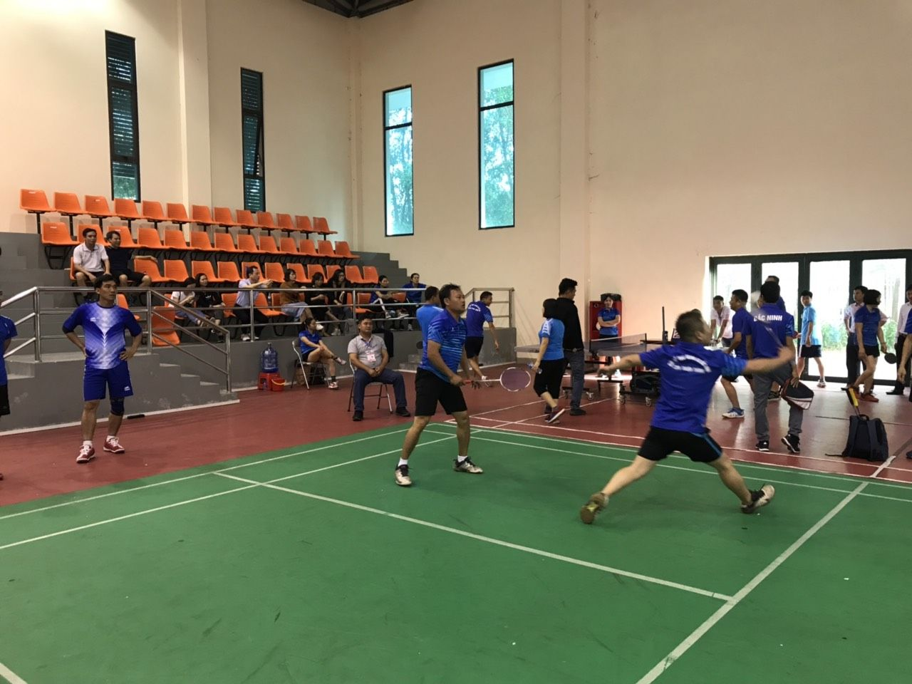
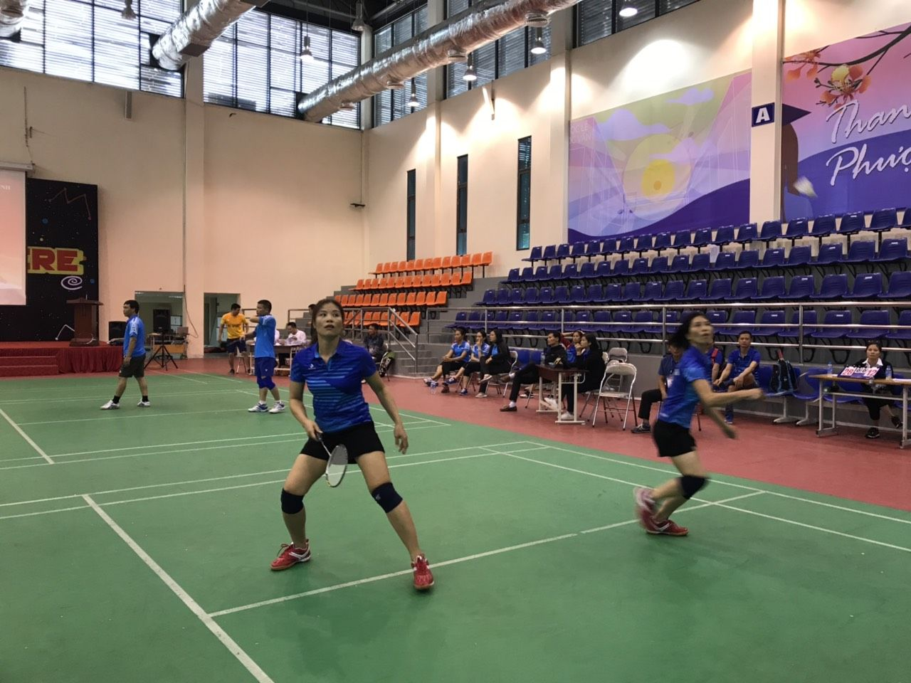
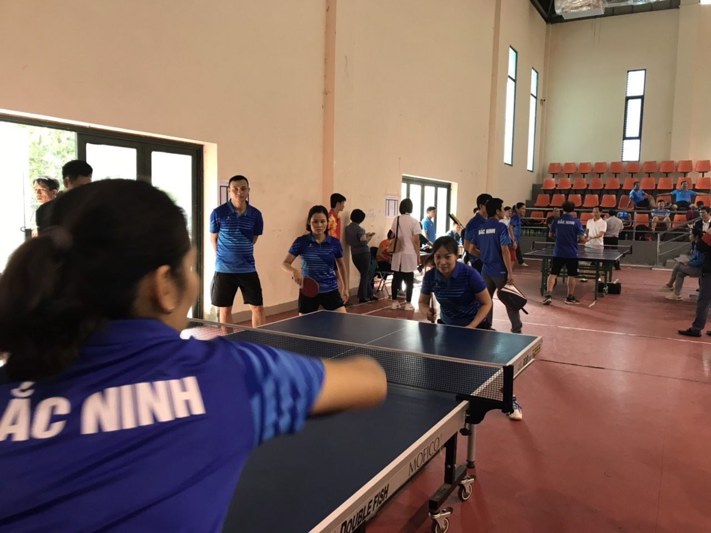

Vòng chung kết giải Cầu lông - Bóng bàn cán bộ, nhà giáo, người lao động các đơn vị trực thuộc Công đoàn ngành Giáo dục năm 2020
Ngày 10/11/2020, tại nhà thi đấu đa năng trường THPT Chuyên Bắc Ninh, Sở Giáo dục và Đào tạo - Công đoàn Giáo dục tỉnh Bắc Ninh phối hợp tổ chức Khai mạc vòng Chung kết giải Cầu lông - Bóng bàn dành cho cán bộ, nhà giáo, người lao động các đơn vị trực thuộc năm 2020. Đây là một trong các hoạt động chào mừng kỷ niệm 38 năm Ngày Nhà giáo Việt Nam ( 20/11/1982-20/11/2020).
Dự Lễ Khai mạc có đồng chí Ngô Văn Liên- Ủy viên BTV Tỉnh ủy, Giám đốc Sở GDĐT; Đồng chí Nguyễn Thị Vân Hà – Tỉnh ủy viên, Chủ tịch LĐLĐ tỉnh; Đồng chí Nguyễn Thế Sơn - Phó Giám đốc Sở GDĐT, Trưởng BTC giải; đồng chí Trịnh Khôi – Phó Giám đốc Sở GDĐT; đồng chí Đào Thị Thuý Nga - Chủ tịch Công đoàn ngành; các đồng chí lãnh đạo các Ban Liên đoàn Lao động tỉnh, Lãnh đạo Công đoàn ngành, Lãnh đạo các phòng thuộc Sở, Hội Cựu Giáo chức tỉnh, Hội Khuyến học tỉnh, các đơn vị trực thuộc Sở; các vận động viên tham gia giải và đông đảo các Thầy giáo, cô giáo, đoàn viên công đoàn cùng các em học sinh, sinh viên trong ngành.
Phát biểu Khai mạc, đồng chí Nguyễn Thế Sơn – Phó Giám đốc Sở GDĐT, Trưởng Ban tổ chức đánh giá cao ý nghĩa của Giải thể thao dành cho cán bộ, nhà giáo, người lao động. Đồng chí khẳng định: “Giải thi đấu Cầu lông - Bóng bàn là một trong những hoạt động thể thao thiết thực được tổ chức để chào mừng kỷ niệm 38 năm Ngày Nhà giáo Việt Nam. Không những vậy, Giải thi đấu được tổ chức phù hợp với nhu cầu và vào thời gian hợp lý nên vừa khuyến khích được đông đảo lượng người tham dự, vừa tạo được phong trào rèn luyện sức khỏe cho cán bộ, nhà giáo, người lao động trong ngành”. Đồng chí nhấn mạnh “Đây không phải lần đầu tiên Sở GDĐT và Công đoàn ngành tổ chức các giải thi đấu thể thao dành cho cán bộ, nhà giáo và người lao động. Các giải thể thao luôn được mong chờ vì đã phục vụ đúng nhu cầu của người lao động trong ngành, là một trong những niềm vui của cán bộ, nhà giáo, người lao động”. Đồng chí đề nghị giải thể thao phải được duy trì qua các năm tiếp theo để tạo phong trào và rèn luyện sức khỏe để hoàn thành tốt nhiệm vụ được giao.
Vòng chung kết Giải Cầu lông - Bóng bàn dành cho cán bộ, nhà giáo, người lao động được tổ chức vào 2 ngày 10 và 11/11/2020. Qua các trận thi đấu vòng loại tại các Cụm trường, có gần 150 cán bộ, nhà giáo, người lao động đại diện cho 8 cụm thi đấu đến từ các đơn vị trực thuộc Sở. Giải cầu lông bao gồm các giải đôi Nam, đôi Nữ, đôi Nam - Nữ phối hợp. Giải bóng bàn bao gồm các giải đơn Nam, đơn Nữ, đôi Nam, đôi Nữ theo các lứa tuổi và đối tượng quy định trong Điều lệ giải.
Kết thúc giải, BTC trao 15 giải nhất, 15 giải nhì, 25 giải ba cho các nội dung bóng bàn và cầu lông; trong đó giải nhất toàn đoàn thuộc về cụm thành phố Bắc Ninh; giải nhì toàn đoàn thuộc về cụm thị xã Từ Sơn và huyện Thuận Thành, giải Ba toàn đoàn thuộc về cụm huyện Quế Võ, huyện Tiên Du và huyện Lương Tài.
Một số hình ảnh:

Các đồng chí Lãnh đạo trao cờ lưu niệm cho đại diện các cụm thi đấu

Lãnh đạo Sở, lãnh đạo Công đoàn ngành trao cờ lưu niệm cho các cụm đạt giải nhất, nhì, ba toàn đoàn

Chủ tịch Công đoàn ngành trao cờ lưu niệm cho các đơn vị đạt giải nhất, nhì, ba cầu lông



